Какво е AI Agent Harness: Софтуерната обвивка, която превръща моделите в агенти
В официална публикация на корпоративния си блог [1], екипът на Databricks анализира една от най-значимите концептуални промени в разработката на софтуер с изкуствен интелект: прехода от чисти езикови модели към завършени системи. Ключов елемент в тази еволюция е т.нар. агентна обвивка (AI agent harness). Това е софтуерната инфраструктура, която обгражда големия езиков модел (LLM) и му позволява да извършва реални действия, вместо просто да отговаря на текстови промптове.
В съвременната софтуерна архитектура се налага формулата: Агент = Модел + Обвивка (Agent = Model + Harness). Ако моделът е „мозъкът“, който разсъждава и взема решения, то обвивката е „тялото“ и работното пространство, които осигуряват достъп до инструменти, памет, файлови системи и предпазни механизми. Без тази обвивка дори и най-мощният модел остава изолиран и неспособен да изпълнява сложни, многостъпкови процеси самостоятелно [1].

Схема: Svetni.me, базирана на архитектурата на Databricks
Цикълът ReAct: Как работи съвместната архитектура
В основата на всеки съвременен AI агент лежи цикълът ReAct (Reason -> Act -> Observe / Разсъждение -> Действие -> Наблюдение), описан за първи път в научна публикация от 2022 г. Този процес илюстрира взаимодействието между двете нива:
- Разсъждение (Reason): Моделът анализира наличната информация в контекстния си прозорец (задачата, паметта, предходните резултати) и взема решение за следващото действие.
- Действие (Act): Агентната обвивка получава това решение и го привежда в изпълнение – извиква API, стартира код в изолирана среда или прави заявка към база данни.
- Наблюдение (Observe): Обвивката улавя резултата от действието (например съобщение за грешка или върнати данни) и го подава обратно на модела като нов контекст.
- Повторение (Repeat): Цикълът се повтаря, докато моделът не реши, че задачата е завършена.
Например при агент за отстраняване на бъгове в код, моделът предлага корекция. Агентната обвивка стартира кода в изолирана тестова среда, събира резултатите от тестовете и ги връща на модела. Ако тестовете се провалят, моделът разсъждава върху грешката и предлага нова корекция. Обвивката управлява физическото взаимодействие със системата, докато моделът се фокусира изцяло върху логиката на решението [1].
Осемте градивни блока на производствената обвивка
Според анализа на Databricks, изграждането на надеждна агентна обвивка изисква интеграцията на осем критични софтуерни компонента:
- Системни промптове (System prompts): Базовите инструкции, които определят ролята, поведението, правилата и границите на агента преди всяко потребителско въвеждане.
- Инструменти и тяхното изпълнение (Tools & Tool execution): Функции и API интерфейси, които моделът може да извиква. Съвременната тенденция е преминаване от твърдо дефинирани инструменти към даване на възможност на агента сам да пише и изпълнява код за динамично решаване на проблеми.
- Изолирани среди за изпълнение (Sandboxes): Безопасни, контейнеризирани среди, в които агентът може да изпълнява генерирания от него код без риск за хост машината или производствените системи.
- Файлова система и трайно съхранение (Filesystem & Durable storage): Пространство, в което агентът чете и записва файлове, чертежи и планове. Това му позволява да запазва прогреса си при дълготрайни задачи и да си сътрудничи с хора или други агенти.
- Управление на паметта и контекста (Memory & Context management): Инструменти за подрязване и компресиране на контекста (context compaction). Тъй като моделите губят фокус при твърде дълга история, обвивката решава коя част от историята да остане активна и коя да се обобщи.
- Обратни връзки и самопроверка (Feedback loops & Self-verification): Системи, които тестват и проверяват междинните резултати на агента, преди той да продължи напред, давайки му шанс да се коригира сам.
- Предпазни механизми и контрол (Guardrails & Human-in-the-loop): Правила за сигурност, които блокират опасни действия (например изтриване на база данни или неразрешени плащания) и изискват изрично човешко одобрение за критични операции.
- Обсервабилност и логване (Observability & Logging): Подробни следи (traces) и хронология на решенията за диагностика на проблеми, одит за съответствие и захранване на рамки за оценка на качеството [1].
Еволюцията: От промпт инженеринг към обвивки
Индустрията преминава през три основни фази на развитие при работата с изкуствен интелект:
- Промпт инженеринг (Prompt engineering): Фокусиран върху прецизното формулиране на текстовия вход с цел получаване на по-добър единичен отговор.
- Контекст инженеринг (Context engineering): Насочен към филтриране и подреждане на информацията, която моделът вижда в даден момент (RAG архитектури и управление на паметта).
- Harness инженеринг (Harness engineering): Системно проектиране на цялата софтуерна екосистема около модела – инструменти, изолирани среди, обратни връзки и контроли.
Качеството на обвивката вече оказва по-голямо влияние върху крайната производителност, отколкото суровата сила на самия модел. Когато Databricks сдвоява модела GPT-5.5 с тяхната специализирана обвивка OfficeQA Pro Agent Harness, резултатът на бенчмарковете скача на 52,63% спрямо 36,10% при същия модел с базова обвивка, като грешките са намалени почти наполовина [1].
Дефекти при изпълнението и корпоративно управление
Неправилно проектираната обвивка е основната причина за провали на AI агенти в реални условия. Най-често срещаните дефекти включват деградация на разсъжденията поради препълване на контекста (context rot), забавяне на работата (latency) поради твърде много последователни извиквания на инструменти, както и липса на предпазни контроли, което може да доведе до необратими действия в производствени среди [1].
При разгръщането на десетки агенти в една организация възниква проблемът с „хаотичното разрастване“ (agent sprawl) – дублиране на несвързани обвивки без единен контрол. За решаването на този проблем Databricks предлага платформата Agent Bricks. Тя действа като централизиран контролен панел (control plane), който стандартизира сигурността и достъпа до данни чрез Unity Catalog и управлява жизнения цикъл, обсервабилността и оценката на моделите чрез интегрираната система MLflow [1].
Бъдещи тенденции
С развитието на технологиите се оформят две основни тенденции в harness инженеринга:
- Еднократни обвивки (Disposable harnesses): Лек и временен софтуерен харнес, който се създава за изпълнението на конкретна задача и се унищожава веднага след това.
- Обвивки на естествен език (Natural-language agent harnesses - NLAHs): Системи, при които конфигурацията на инструментите, паметта и предпазните механизми се описва с обикновен текст, интерпретиран динамично от общ софтуерен рантайм [1].
В крайна сметка моделът съдържа интелекта, но обвивката е тази, която го превръща в работеща производствена система. Докато това разграничение е в сила, качеството на агентната обвивка ще бъде основният фактор за успеха на бизнес приложенията с изкуствен интелект.
Източници:
[1]: What is an AI agent harness? - Databricks Blog